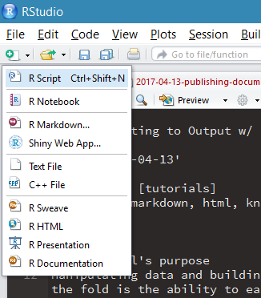
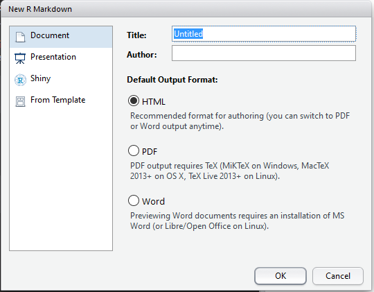
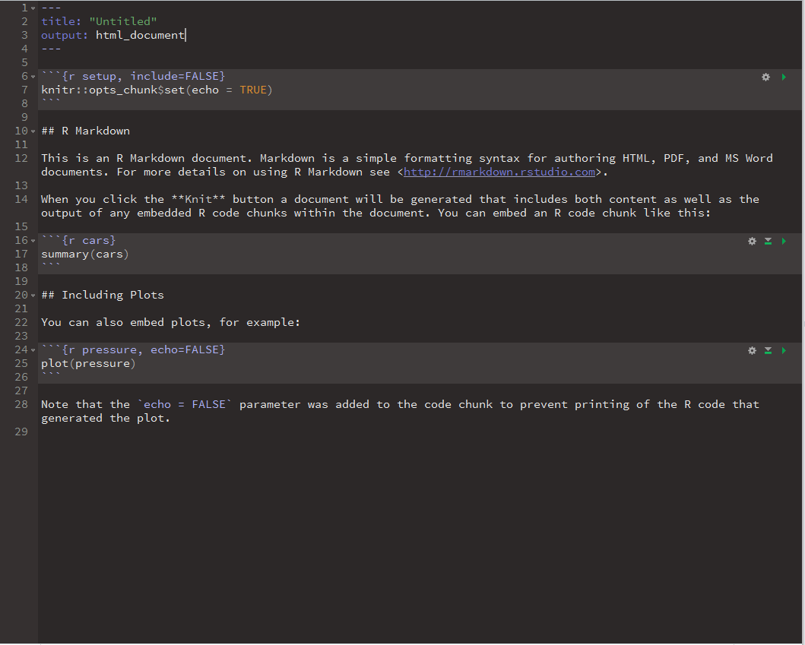
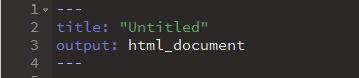
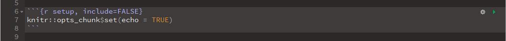
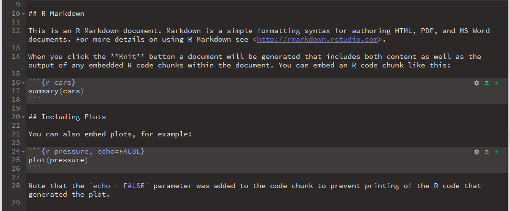
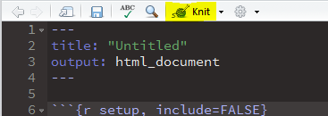
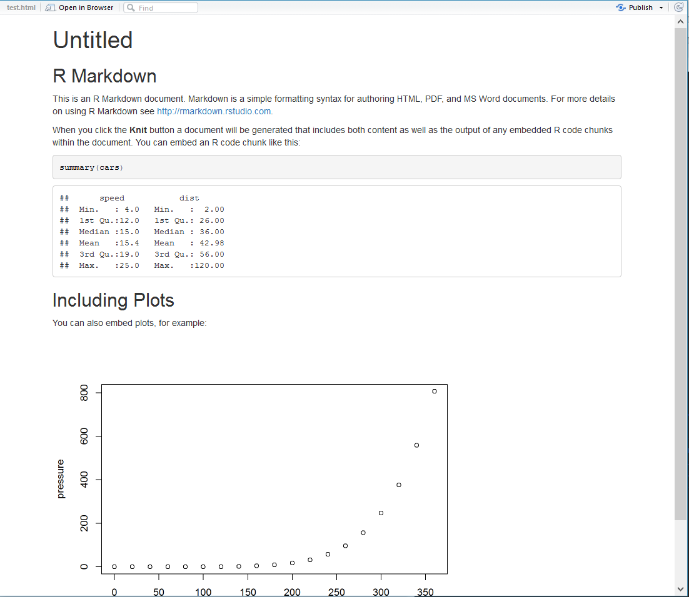

Knitting to Output with Rmarkdown
Tutorial’s purpose
Manipulating data and building visuals is the bread and butter of the R language - but what can get lost in the fold is the ability to easily and quickly push analysis out for folks to see. Using knitr and rmarkdown makes that significantly easier, and exists at the press of a button. In this tutorial, we’re going to press those buttons.
What are the packages?
There are a ton of ways to get information from R out into the world - ranging from static Word or PDF documents all the way to interactive web applications. However, this is going to focus more on the former than the latter - publication of static files (with the possibility of embedding interactive graphics as well).
To do this, we rely heavily on two packages - knitr and rmarkdown
| Package | Description |
|---|---|
rmarkdown |
Convert R Markdown documents into HTML, Word, or PDF files |
knitr |
Package to build dynamic and flexible reports |
Using both of these, we can take our R markdown documents and quickly knit them into more user-friendly reports or static web pages, and then render them appropriately. Go ahead and install these and read them in if you haven’t already
First, what’s R markdown?
R markdown is a filetype (.rmd) that supports markdown syntax and code chunk execution within the RStudio IDE. The beauty of R markdown documents (and their counterpart - R notebooks) is that they allow the analyst to weave their narrative around the data analysis itself. In addition, by running your products in R markdown you can very quickly and easily render the file into new formats that look less codey and more pretty (this post, for instance, was written in R markdown).
How does it work?
To set up an R markdown, simply select R Markdown in the dropdown selection when you start a new file.

After you select R markdown, a message window will pop up and ask you some info about the document you will ultimately want to create. This includes the name of the document, the author, and what the final filetype will be (HTML, PDF, or Word). In our case, we are going to choose HTML.

Once you’ve made your selection, a new R markdown file will open in your Source panel with some stuff already pre-populated throughout. This initial file is sort of a tutorial - it gives a very brief overview of how it is set up and how to use it. We’ll talk about each section individually.

Front-matter matters
At the top of your R markdown document will be ‘YAML front-matter’ contained within two sets of --- - this section will inform knitr how to create the document when we choose to knit it. Since we set up our file parameters to output as HTML, our front-matter designates the output as html_document - and the title and (if we put one in) the author will be displayed here as well.

It is also possible to include metadata in the front-matter, such as tags or any type of categorization of your post. You can also assign various themes, assign a tabloe of contents, or even reference your own CSS styling to be applied to the final product. I’m not going to get into detail with that, but if you’re interested checkout RStudio’s tutorials on R markdown here.
Do work(space)
Below the YAML front-matter is where the magic really happens - because this is where the actual analysis takes place. When you look at an R markdown document, it is generally cut up by what are called “code chunks.” These are sections of the document that are surrounding by three backticks. In markdown, ````` denotes a chunk of computer code - and that’s the same in R markdown.
Along with these three backticks, you will notice a language specification (it’s almost always just r, but now knitr supports several different languages) as well as a general section title and some rules about the output of the chunk. When the document is knitted, the chunks will be executed and the results of the code will be displayed in the final output (unless you specifically tell it to be hidden).

Areas outside of the code chunks - which is everything not surrounded by three backticks - are free text space. The text in this area adheres to markdown syntax, giving the analyst the ability to take full power of the ease in creating formatted text to be rendered. The combination of the free text space and the code execution is fantastic for project work, as you can inject your narrative directly into the analysis itself.

In addition, you can run the script within the IDE just as if it was a plain R script as well - RStudio will execute the code chunks and even display the output of those chunks interactively beneath them within your Source panel if you have the most up-to-date version of RStudio installed. Essentially, R markdown documents are a one-stop shop for running projects in RStudio!
Cool - what now?
Now that we know how to start and use R markdown documents, let’s talk about how to knit them. Because ultimately, all we have done up until now is replace an R script that you would never send to a non-analyst (read: normal) person with an R markdown document that you would also never send to a non-analyst person. This is where knitr comes into play.
At the top of your Source panel is a button that says, appropriately, “Knit.” When you click that button a file window will ask you to save your file.

Once you have named and saved your file, it will begin to be processed and a new file will be created based on the filetype specified in the YAML front-matter we talked about before. Since we have ours set to html_document, an HTML file is created. By default, RStudio will display the new file in a new window for you to view - or you can just open the file to view in a browser (or whatever based on your filetype).

You can then either send the final output on to your final audience, or even host it as a standalone webpage or blogpost - and your analysis, visualizations, and narrative will be available for all to see! Also - this includes interactive charts as well - knitr will appropriately render those as well if you are using interactive plotting packages like plotly which rely on JavaScript libraries.
That’s all it takes! If you’re interested in checking out more - dive into the R markdown gallery - there are a ton of great examples that provide their source code as well. Have fun, and go build cool stuff!